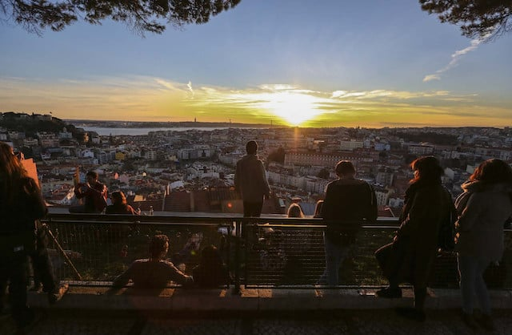

Pontos de interesse:
Lisboa é um tesouro de cultura e história, com pontos turísticos fascinantes. Monumentos, museus e praças vibrantes oferecem experiências únicas que refletem a rica herança local. Venha explorar as suas belezas!
Top 5 de Restaurantes:
- Belcanto, localizado na Rua Serpa Pinto, 10 A, 1200-445 Lisboa.
- Cervejaria Ramiro, localizado na Avenida Almirante Reis 1- H, 1150-007 Lisboa.
- Solar Dos Presuntos, localizado na Rua Das Portas De Stº Antão, 150, 1150-269 Lisboa
- O Magano Restaurante Alentejano, localizado na Rua Tomás da Anunciação 52A, 1350-328 Lisboa.
- Gambrinus Lisboa, localizado na Rua das Portas de Stº Antão 23, 1150-264 Lisboa
- Belcanto
- Cervejaria Ramiro
- Solar Dos Presuntos
- O Magano Restaurante Alentejano
- Gambrinus Lisboa
Top 5 de Monumentos:
- Torre De Belém, localizado na Avenida Brasília, 1400-038 Lisboa.
- Mosteiro Dos Jerónimos, localizado na Praça Do Império, 1400-206 Lisboa.
- Catedral De Lisboa, localizado no Largo Da Sé 1, 1100-585 Lisboa.
- Castelo De São Jorge, localizado na Rua Santa Cruz Do Castelo, 1100-129 Lisboa.
- Padrão Dos Descobrimentos, localizado na Avenida Brasília, 1400-038 Lisboa.
- Torre De Belém
- Mosteiro Dos Jerónimos
- Catedral De Lisboa
- Castelo De São Jorge
- Padrão Dos Descobrimentos
Locais a Não Perder:
- Oceanário de Lisboa https://oceanario.pt/
- Jardim Zoológico https://www.zoo.pt/
- Gulbenkian https://gulbenkian.pt/
- Lx Factory https://lxfactory.com/
- Museu Nacional de Arte Antiga http://museudearteantiga.pt/
Melhor Local Para Tirar Uma Foto:
Miradouro da Nossa Senhora do Monte

Melhor Local Para Tirar Uma Foto:
Melhor Altura para Visitar:
| Mês | Ranking (0 a 10) |
|---|---|
| Janeiro | 4.5/10: Clima frio para os padrões de Lisboa, com temperaturas variando entre 7°C e 15°C. Pode haver alguns dias chuvosos, mas também há dias de sol. Turismo baixíssima quantidade de turistas, ideal para quem quer explorar a cidade sem multidões. Eventos algumas celebrações de Ano Novo no início do mês e o Dia de Reis (6 de janeiro), mas o mês é geralmente tranquilo em termos de eventos. Custos um dos meses mais baratos para visitar Lisboa, com ótimas promoções em acomodações e voos. |
| Fevereiro | 5/10: Clima semelhante a janeiro, com temperaturas entre 8°C e 16°C. A chuva ainda pode aparecer, mas há mais dias de sol à medida que o mês avança. Turismo a cidade continua tranquila em relação ao fluxo de visitantes, embora o Carnaval, caso caia em fevereiro, possa trazer um pouco mais de movimento. Eventos carnaval, com algumas festividades e desfiles em bairros locais. Custos ainda bem acessíveis, com bons preços em hotéis e restaurantes. |
| Março | 6/10: Clima começa a aquecer, com temperaturas entre 10°C e 18°C. Turismo menos turistas, ideal para quem prefere lugares mais calmos. Eventos início da primavera, com flores e paisagens bonitas. Custos relativamente baixos. |
| Abril | 7.5/10: Clima dias mais longos e temperaturas entre 12°C e 20°C. Turismo o fluxo de turistas começa a aumentar, mas ainda é suportável. Eventos semana Santa e início de festivais de primavera. Custos moderados, antes do aumento de preços para o verão. |
| Maio | 10/10: Clima agradável, com temperaturas amenas entre 15°C e 25°C. Turismo ainda não é alta temporada, então a cidade está relativamente tranquila. Eventos festivais de música e a proximidade das Festas de Lisboa em junho. Custos moderados, com preços de acomodação ainda acessíveis. |
| Junho | 8.5/10: Clima começa o verão, com temperaturas agradáveis entre 18°C e 28°C. Turismo alta temporada, mas o ambiente festivo compensa. Eventos as Festas de Lisboa são destaque, com celebrações por toda a cidade. Custos os preços começam a aumentar, mas é possível encontrar boas opções |
| Julho | 7/10: Clima muito calor, com temperaturas entre 20°C e 30°C. Turismo alta temporada, com muitos turistas. Eventos muitas opções de atividades ao ar livre e festivais de verão. Custos altos, principalmente em acomodações e passagens. |
| Agosto | 6.5/10: Clima quente, muitas vezes ultrapassando os 30°C. Turismo muito movimentado, especialmente nas praias. Eventos festivais de verão em toda a cidade e região. Custos um dos meses mais caros para visitar. |
| Setembro | 9/10: Clima perfeito, com dias ensolarados e temperaturas entre 17°C e 28°C. Turismo o fluxo de turistas começa a diminuir após agosto, tornando os passeios mais tranquilos. Eventos muitos eventos ao ar livre e festivais. Custos ainda são mais altos, mas melhores do que nos meses de verão. |
| Outubro | 8/10: Clima temperaturas amenas (15°C a 23°C) e menos chuvas do que em novembro. Turismo queda significativa de turistas, o que torna os passeios mais relaxantes. Eventos alguns festivais de outono e eventos culturais. Custos baixa de preços, especialmente no final do mês. |
| Novembro | 5.5/10: Clima mais frio e chuvoso, com temperaturas entre 10°C e 18°C. Turismo bem menos turistas, o que torna os locais mais acessíveis. Eventos alguns festivais culturais e início das decorações de Natal. Custos baixos, com boas promoções em acomodações. |
| Dezembro | 5/10: Clima frio, com temperaturas variando entre 8°C e 15°C. Turismo mais turistas no final do mês devido às festas de Natal e Ano Novo. Eventos decorações de Natal e mercados natalinos. Custos moderados no início do mês, mas aumentam nas festas. |
Melhor Altura para Visitar:
| Mês | Ranking (0 a 10) |
|---|---|
| Janeiro | 4.5/10 |
| Fevereiro | 5/10 |
| Março | 6/10 |
| Abril | 7.5/10 |
| Maio | 10/10 |
| Junho | 8.5/10 |
| Julho | 7/10 |
| Agosto | 6.5/10 |
| Setembro | 9/10 |
| Outubro | 8/10 |
| Novembro | 5.5/10 |
| Dezembro | 5/10 |